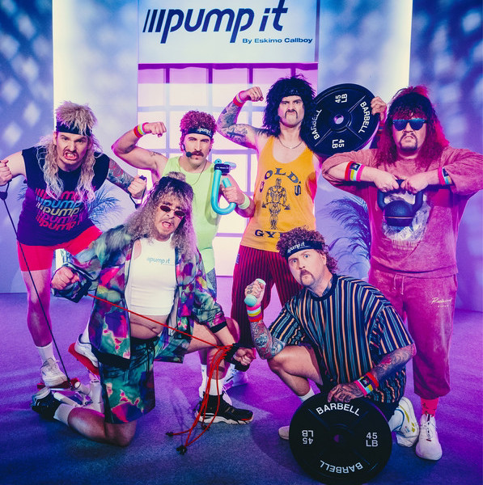

Electric Callboy (formerly known as Eskimo Callboy) is a German electronicore band formed in Castrop-Rauxel in 2010. They take a more relaxed approach to the genre, and are known for their comedic songs, live shows and videos. The band's musical style can be described as electronicore, metalcore, melodic metalcore, post-hardcore, comedy rock, dubstep, electro, and EDM. The musicians named bands like Asking Alexandria and Attack Attack! as their musical influences. Their singer stated that the musicians don't feel like being a part of the "hardcore music scene". The lyrics deal with themes such as getting drunk, parties, and sex. The band call their music "Porno Metal". In an interview with the German FUZE magazine, vocalist Sebastian Biesler meant that the lyrics only use clichés in a satirical way. In German Metal Hammer magazine, the reviewer gave the band a positive critique. He wrote, "this is why Eskimo Callboy is fun because they dismiss themselves and let ruling the fun".
The band started recording their second album at Kohlekeller Studios together with producer Kristian Kohlmannslehner in autumn of 2013. The album, We Are the Mess, was released on 10 January 2014 via Redfield Records and Warner Music Japan. The band played five release shows in Germany supported by Annisokay. We Are the Mess peaked in 8th place on Germany's official long-play charts and in 64th place in Austria. The band toured in Japan to promote their album. In March of that year, the band toured Europe supported by Iwrestledabearonce, Her Bright Skies and To the Rats and Wolves. In August 2019, the band released the single "Hurricane" from their fifth studio album. The album, Rehab, was released on 1 November 2019. Following the release of Rehab, the band embarked on their Rehab European Tour 2019. On 12 February 2020, the band announced through their social media appearances that the previous singer "Sushi" would be leaving the band. "Sushi" went on to start a new project called "Ghostkid".